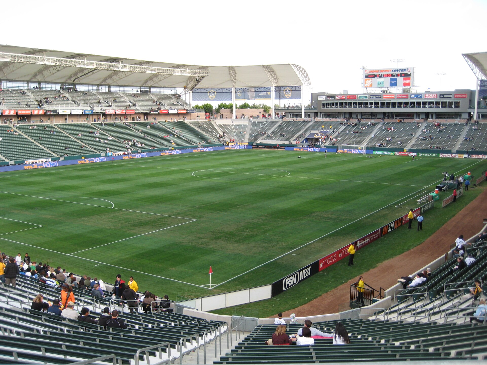

Twice Down, Twice Back: SDFC's 2–2 at LA Galaxy Keeps the Flicker Alive

All four goals came in the first half. San Diego FC fell behind twice at Dignity Health Sports Park on Saturday night and answered twice — Anders Dreyer from the penalty spot, Gabriel Pirani with a poacher's finish — to escape Carson with a 2–2 draw and keep their all-time unbeaten record against the LA Galaxy intact. Entertaining? Absolutely. Enough? Not even close.
Because here is the number that matters more than any other from Saturday: eight. As in eight straight games without a win (0–4–4). The point in Carson kept SDFC breathing, but draws don't close five-point gaps.
Four goals, 39 minutes
The Galaxy struck first, and fast. In the 4th minute, João Klauss picked the ball up near midfield on a counterattack, charged through the San Diego half, and curled a shot into the bottom corner from outside the box — Sergi Roberto's first assist as a Galaxy player. 1–0, and SDFC were chasing the game before most fans had found their seats.
The response was swift. Cédric Bakambu — fouled in the box again, just as he was against Houston — was brought down by Galaxy goalkeeper JT Marcinkowski, and Dreyer buried the penalty in the 10th minute for his 13th goal of the season. 1–1.
But the defending switched off again almost immediately. In the 17th minute, Harbor Miller crossed to the back post after a slick Galaxy transition, and Erik Thommy met it first-time to restore the lead. Klauss even thought he had a second moments later, only for the flag to go up for offside — SDFC got away with one there.
Pirani made sure the escape was complete. In the 39th minute, a blocked shot fell kindly for the Brazilian in the center of the penalty area, and he swept home his fourth goal of the season — his second in consecutive matches. 2–2 at the break, and remarkably, that was the scoring done.
The same flaws, on the road
Possession without purpose. Look at the stat line: 64.6% possession, 15 shots to the Galaxy's 12. And yet SDFC never led for a single minute. This is the story of the season in one game — the ball, but not the cutting edge. When you dominate possession that completely and still need two comebacks to draw, the possession is decoration.
Asleep at the start. Conceding in the 4th minute, on the counter, with Klauss allowed to run half the field unchallenged — that is not bad luck, that is bad preparation. SDFC have now made a habit of starting games a goal down and spending the rest of the night digging out. Playoff teams don't do that.
Fullbacks caught upfield. Both Galaxy goals came from transitions down the flanks — Klauss driving through the middle on the break, Thommy arriving unmarked at the back post. When SDFC commit numbers forward and lose the ball, the recovery runs aren't there. Twice on Saturday, the punishment was instant.
The bright sparks
Pablo Sisniega. Seven saves in only his second start of the season, and several of them kept SDFC in the game during a second half the Galaxy shaded. With the playoff chase on the line, the goalkeeper stood tallest.
Gabriel Pirani. Two goals in two games, both the scrappy, right-place-right-time kind that this team has been missing. The 86th-minute rescue against Houston, the 39th-minute equalizer in Carson — Pirani is developing a habit of showing up when SDFC need him most.
The rivalry record. Three wins and a draw in four all-time meetings with the Galaxy. Small consolation on a night SDFC needed three points, but this fixture is becoming genuinely fun — and SDFC own it.
The playoff math — four games left

Here is where it stands. The draw leaves SDFC 12th in the Western Conference on 34 points — five behind Colorado, who hold the ninth and final playoff spot — with four matches remaining: Seattle at home on Saturday (Fan Appreciation Night), then at Vancouver, at St. Louis, and home to Sporting Kansas City to close.
The maximum is 46 points, so the arithmetic still works. But the shape of it is brutal: SDFC likely need three wins from four, plus Colorado stumbling, plus climbing over Real Salt Lake, Portland, and Minnesota — all of whom hold the wins tiebreaker over San Diego's meager eight victories. Draws, however brave, no longer move the needle.
What has to change is what has had to change for two months: turn possession into wins, stop conceding first, and defend transitions like a team that wants to play in November. Seattle at Snapdragon on Saturday is the season now — win that, and the flicker becomes a flame. Anything less, and the math turns from difficult to fantasy.
Saturday in Carson proved SDFC have the character to come back. Four games left to prove they have the ruthlessness to go ahead and stay there.